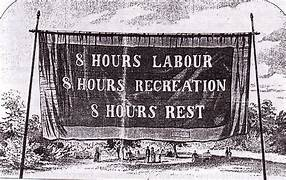

| |
|||||||||
|---|---|---|---|---|---|---|---|---|---|
| International Workers' Day, also known as Labour Day in some countries[1] and often referred to as May Day,[2][3] is a celebration of labourers and the working classes that is promoted by the international labour movement and occurs every year on 1 May,[4][5] or the first Monday in May.Traditionally, 1 May is the date of the European spring festival of May Day. In 1889, the Marxist International Socialist Congress met in Paris and established the Second International as a successor to the earlier International Workingmen's Association. They adopted a resolution for a "great international demonstration" in support of working-class demands for the eight-hour day. | |||||||||
| The 1 May date was chosen by the American Federation of Labor to commemorate a general strike in the United States, which had begun on 1 May 1886 and culminated in the Haymarket affair four days later. The demonstration subsequently became a yearly event.[5] The 1904 Sixth Conference of the Second International, called on "all Social Democratic Party organisations and trade unions of all countries to demonstrate energetically on the First of May for the legal establishment of the eight-hour day, for the class demands of the proletariat, and for universal peace"The 1st of May, or first Monday in May, is a national public holiday in many countries, in most cases as "International Workers' Day" or a similar name. Some countries celebrate a Labour Day on other dates significant to them, such as the United States and Canada, which celebrate Labor Day on the first Monday of September. | |||||||||
|  |  |
||||||||
| |
|||||||||
2025 | workers day Celebration Portal by Rumpi